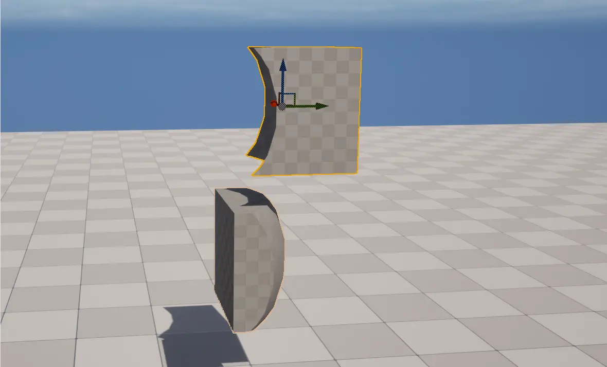
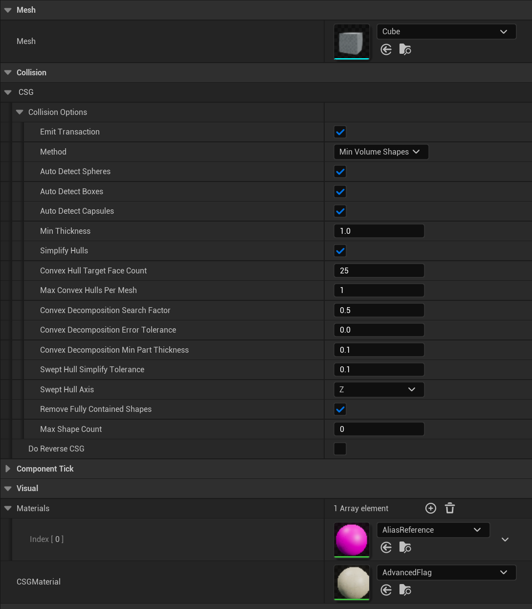
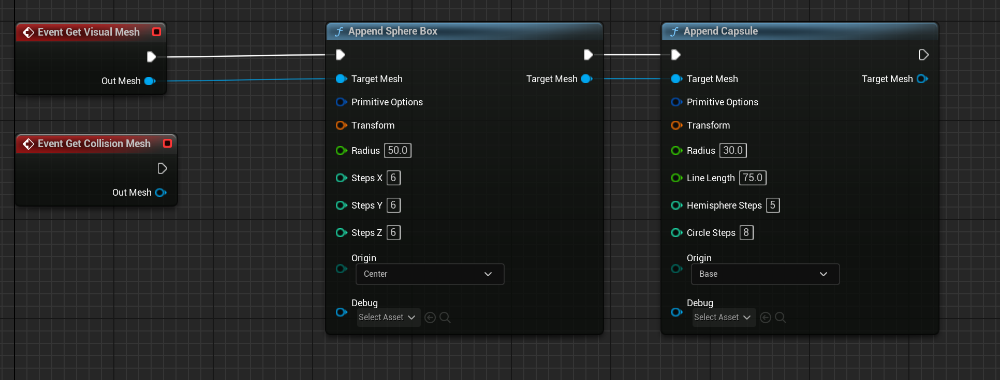

Project Overview
CSG Area is a custom plugin for the Unreal Engine that enables real-time Constructive Solid Geometry.
Inspired by the Timegate crystals in Skyward Sword, this plugin introduces custom components that are visible only when inside (or outside) defined areas—creating the illusion of an alternate world.
Area-Based Geometry Transition
The plugin supports dynamic objects that continuously adjust collision boundaries in real time, ensuring seamless interaction even as objects move. Leveraging Unreal's Geometry Scripting plugin, it recalculates shapes dynamically to maintain accurate collision detection.

Great flexibility through settings
Designed with configurability in mind, the plugin offers extensive settings that make it both flexible and user-friendly:
- Built-in support for static meshes
- Full exposure of collision generator settings for advanced customization
- Compatibility with meshes featuring multiple material slots, allowing specification of a custom material lists
- Option to change the material used for the “cut” segments of the mesh

Ability to create custom meshes
Need something beyond a static mesh? Easily create custom components based on the provided framework and implement the exposed events to tailor functionality. This approach is fully compatible with Unreal's Geometry Scripting plugin for versatile mesh creation.

Open source and free to download
As with all my projects, CSG Area is open source and free to download on GitHub.
Get It here